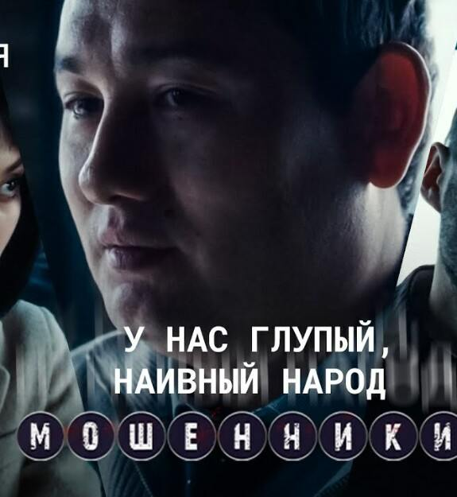

Қозоғистонлик киноижод соҳаси вакиллари дунё миқёсида катта шуҳрат қозониб келмоқда.

НТК жамоаси ижод гуруҳига мансуб бўлган "Мошенники"(Фирибгарлар) номли Ижтимоий сериалга кўзим тушиб қолди. Сериалда қатнашган актёр, режиссёр ва бошқа ижодкорларнинг моҳирона меҳнатидан ташқари мени сериал мавзусидаги оддий жамият аъзосига етказиладиган хабар қаттиқ таъсирлантирди.
Ҳозирги кунда аччиқ бўлса ҳақиқат бўлган кенг тарқалган жамият иллати оддий тилда оддий инсонга чайнаб берилган. Қўпол қилиб айтганда ўзимизнинг "Шайтанат"нинг изоҳли кўриниши. Кадрда бўлаётган ишни учинчи шахс овози, яъни ўша вазият эгаси бўлган қаҳрамон овози билан изоҳлаб борилган.
Ҳаммага қатъий тавсия этаман!
Ўзбек кино ижодкорларига ҳадеб коммерческий лойиҳаларга аҳамият бермасдан, лик-лик ёки саёз (бой-камбағал, қайнона-келин, сохта севгилар ва б.) мавзуларни ёритмасдан, шунга ўхшаш ижтимоий масалаларни ёритишга хайрихоҳ бўлишларини илтимос қилиб қоламиз.
Сериалнинг ҳаволаси:
https://www.youtube.com/watch?v=oyzNKnzDpKQ&list=PL5bAPb-z6LbQrbw9sFFB1MW0TaUzlp981